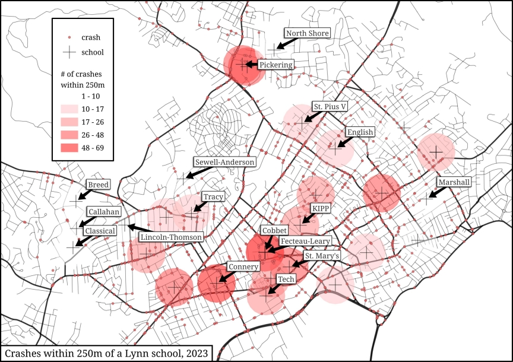

My First QGIS Project
August 9th, 2024
As a very early headstart on my minor in Geospatial Imaging and Analysis, I’ve made my first foray into GIS using the free and open-source QGIS to visualize the number of car crashes within 250 meters of schools in Lynn.
I began by skimming through Matt Forrest’s wonderful tutorial and then picked up some school and crash data from MassGIS. The map doesn’t really say anything, especially given that nearly none of the crashes involve pedestrians under 20 years old, but it was a good primer for me nonetheless.

I overlooked the fact that the red spots are overlapping, making them seem darker than they are. Hopefully I can make some more beautiful (and functional) maps moving foward. But for now, I’m happy with what I’ve created. Not so happy with the file size.